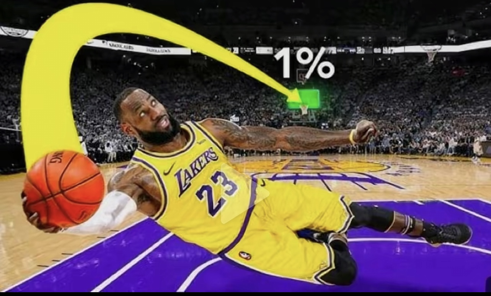

Rocket League is a high-octane, physics-based "soccar" (soccer with rocket-powered cars) video game developed by Psyonix. Players use customizable vehicles to hit a ball into the opponent's goal in 1v1, 2v2, or 3v3 matches. It is a free-to-play, cross-platform, competitive game available on consoles and PC.
Rocket League Corval GroupTHIS IS A NEW LINE
The first accessibility challenge I explored was the Accessibility and Color Blindness. The accessibility challenge explored the different types of color blindness and what they all mean. This disability lab had a primary focus on looking at what people with colorblindness see, and went into how much not being able to see colors can affect your day-to-day life. A real-world barrier that someone with this disability would encounter when using digital interfaces would be not being able to see certain text on the screen due to the text being the same color as the background, because of their color-blindness. When I did the hands-on exercise, I was really surprised because there was no difference between the different colors, and I ended up failing the exercise. After all, I couldn't tell when the exercise would flash red because all of the colors looked the same. Some solutions to figuring out the issue of color blind accessibility would be using a color contrast calculator. This calculator looks at different color pairs that people with color-blindness would be able to see. This, in turn, allows users with color-blindness to be able to see text or other things on your website simply because of a color change. Using a contrast calculator is really important because there are a lot of people who suffer from color-blindness, which means that parts of your website that may be important might not be able to be seen by some users or even accessed, meaning you could be losing out on many different users. In the end, making your website more accessible, especially to people with color-blindness, can only help. The second accessibility lab I looked at was the Accessibility and Dexterity Lab. The accessibility challenge I explored was examining users who, in some way, have a loss of fine motor control. As explained in the lab, this could take many forms, such as paralysis, age-related illnesses, and more.

The specific disability this lab focused on was the users who couldn't use a mouse at all. Meaning everything on the screen had to be able to be controlled/accessed by just the keyboard alone. A real-world barrier that someone with a dexterity disability would face when using a digital interface could be the inability to access anything on a website. This could be due to being extremely fatigued trying to figure out how to navigate it, or getting frustrated that certain things on a website can't be accessed. In the hands-on exercise, I learned firsthand how frustrating it was not to be able to access certain parts of the website, and I also learned how confusing operating with just a keyboard can be. Some recommendations that this lab had to combat the accessibility issue of dexterity were to make everything on the website accessible by keyboard. This could be done by just pressing tab to go to all the different possible options within the website. Being able to do this is really helpful for those users because it allows them to have access to everything on the website and allows them to do everything that an average user would be able to do, like filling out forms or clicking on certain links, without needing to use a mouse. One takeaway that really surprised me and changed how I thought about accessibility development was the fact that so many different people suffer from different types of disabilities, and not creating accessible versions of websites really hinders a lot of people, meaning that you could be losing out on possible users when it comes to your websites. Something else that really surprised me was just how hard it is for people with accessibility issues to access and do simple things on a website. I've never really personally thought about it being a difficult thing, but now I know that some of the accessibility issues make it almost impossible for users to even be able to use websites